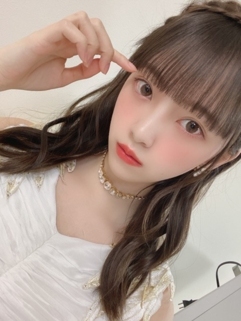
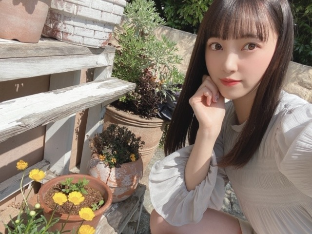

2020/0327Friかくれんぼには強いです
髪色抜けてきたので
そろそろ新しい色にしたいなーと思っています
迷うなぁ迷うなぁ


編み込みカチューシャヘア
気に入りました~
またしたいな~
The Vampsさん熱が最近また増して
よく聴いています
いい歌、いい声、いいMV!
最高です
ややハスキーで優しい歌声が
夕方とか朝は特に癒されますね☺︎


実は数年前から世界中の紅茶を集めていて
パリ、ニース、上海、ニューカレドニア、カリフォルニア、タイ、シンガポール、台湾の紅茶の茶葉がいまは集まっています。
他の国も気になるなぁ。

♡お知らせ♡
5/27発売
堀未央奈 2nd写真集の御予約はこちらから↓
■楽天ブックス①（楽天ブックス限定独占メイキング動画+ポストカード1種）
http://books.rakuten.co.jp/rb/16275200/
■楽天ブックス②（楽天ブックス限定アザーカバー＋ポストカード1種）
http://books.rakuten.co.jp/rb/16275199/
※上記ポストカードの絵柄は①②ともに同一のものとなります。
■セブンネットショッピング（セブンネット限定アザーカバー＋折り目ありB2サイズポスター1枚）
https://7net.omni7.jp/detail/1107083082
■HMV（HMV・loppi限定アザーカバー＋ポストカード1種）
https://www.hmv.co.jp/product/detail/10785595
■タワーレコード（クリアポストカード1種）
http://tower.jp/item/5038617
■乃木坂46 オフィシャルモバイルサイト（クリアファイル1種）
http://sp.nogizaka46.com/q?i=ec/11/lp_xjbe&m=official_wanibooks
※いずれも数に限りがありますので、無くなり次第終了となります。
■Amazon（特典なし）
https://www.amazon.co.jp/dp/4847082931
下記書店チェーンで購入すると、書店毎で別絵柄のポストカード特典が付きます。
(※特別付録の全8種ランダムのポストカードとは別特典となります）
■紀伊國屋書店（紀伊國屋書店限定ポストカード1種）
https://www.kinokuniya.co.jp/c/20200325000000.html
■TSUTAYA（TSUTAYA限定ポストカード1種）
https://tsutaya.tsite.jp/news/book01/i/41573605/
■丸善ジュンク堂書店（丸善ジュンク堂書店限定ポストカード1種）
https://honto.jp/store/news/detail_041000043498.html
■未来屋書店（未来屋書店限定ポストカード1種）
https://www.miraiyashoten.co.jp/news/hori_miona_2nd/
■くまざわ書店（くまざわ書店限定ポストカード1種）
https://www.kumabook.com/comic_tokuten/8022/
■コーチャンフォー（コーチャンフォー限定ポストカード1種）
https://www.coachandfour.ne.jp/original/
先着特典がいっぱいだぁー!
私らしさが詰まった1冊になっていますので是非✨
でははは
2020/03/27 20:18
コメント(293)
未央奈ちゃん、こんばんは〜
魔女の宅急便は不朽の名作ですなぁ。
スミマセン、リアタイ明けなもんで…
ひとり見知らぬ土地でいろんな人に
出会い、経験していくつもの困難を
持ち前の人柄で乗り越えてゆく…
最後はユーミンで締める。
すべてがいい方向に向かっていく。
最高じゃないですか〜
後世に残して欲しいね。
ちなみに、僕は子供の頃に
飛んでる飛行船を自宅から見たこと
があります。僕の自慢です。
熱く語った所で話題を変えまして
お姫様ヘアーは昨日初めて見たんですが
普段の私服にも合っていると思うので
お気に入りなら是非やって貰いたいです。
日常では難しいかもと思うけど。
かくれんぼはリアルの話ですか？
それなら僕も強いですよ。
気配を消す達人なんで…
では。
魔女の宅急便は不朽の名作ですなぁ。
スミマセン、リアタイ明けなもんで…
ひとり見知らぬ土地でいろんな人に
出会い、経験していくつもの困難を
持ち前の人柄で乗り越えてゆく…
最後はユーミンで締める。
すべてがいい方向に向かっていく。
最高じゃないですか〜
後世に残して欲しいね。
ちなみに、僕は子供の頃に
飛んでる飛行船を自宅から見たこと
があります。僕の自慢です。
熱く語った所で話題を変えまして
お姫様ヘアーは昨日初めて見たんですが
普段の私服にも合っていると思うので
お気に入りなら是非やって貰いたいです。
日常では難しいかもと思うけど。
かくれんぼはリアルの話ですか？
それなら僕も強いですよ。
気配を消す達人なんで…
では。
未央奈～ こんにちは
ブログ更新ありがとうございます。
「レコメン」の放送、本当にありがとうございました。
最後の放送も、ノリさんのおかげて大爆笑を伴い、私たちはそれで満足です。
そして、２５ｔｈの新曲発売、おめでとうございます。厳しい状況の中、全握もどうなるかわからない状態にもかからず、早くも１００万枚に迫る勢い、さすが乃木坂４６ですね。
いろんな雑誌で、そしてテレビで‥‥、大活躍何よりです。来週は、ＣＤ-ＴＶ、うたコン、Ｍステ、‥‥‥楽しみにしたいと思います。
さ～て、次の楽しみは２ｎｄ写真集魔発売、こちらも楽しみにしております。
未央奈は「お茶」の愛好家として知られていますが、「紅茶」にも詳しかったんですね。
ブログ更新ありがとうございます。
「レコメン」の放送、本当にありがとうございました。
最後の放送も、ノリさんのおかげて大爆笑を伴い、私たちはそれで満足です。
そして、２５ｔｈの新曲発売、おめでとうございます。厳しい状況の中、全握もどうなるかわからない状態にもかからず、早くも１００万枚に迫る勢い、さすが乃木坂４６ですね。
いろんな雑誌で、そしてテレビで‥‥、大活躍何よりです。来週は、ＣＤ-ＴＶ、うたコン、Ｍステ、‥‥‥楽しみにしたいと思います。
さ～て、次の楽しみは２ｎｄ写真集魔発売、こちらも楽しみにしております。
未央奈は「お茶」の愛好家として知られていますが、「紅茶」にも詳しかったんですね。
パープルの髪飾りの写真、インスタにありましたぁ～
ドライフラワーなんだ、あでやかで良く似合ってますねぇ～
笑顔がまたイイです！
ありがとう～ 未央奈ぁ～！
ドライフラワーなんだ、あでやかで良く似合ってますねぇ～
笑顔がまたイイです！
ありがとう～ 未央奈ぁ～！
未央奈ちゃん、編み込みカチューシャヘアーも
とても可愛い

これまでブログで見たヘアースタイルで1番お洒落で
可愛いかも
紅茶はスリランカ産の紅茶なんかどうでしょう？
とても可愛い
これまでブログで見たヘアースタイルで1番お洒落で
可愛いかも
紅茶はスリランカ産の紅茶なんかどうでしょう？
堀ちゃん、こんばんは＼(^-^)／
ブログたくさんありがとうっ！
写真集の発売日が決まったんだね。
特典いっぱいでいいね
ここ最近、歌番組とかいろいろあったと思うけど、メンバーたちとは楽しくやれているかな？
僕のほうは、もう景気が悪すぎて参ってるよ
美味しいものたくさん食べて、元気に過ごそうね。
またね。
ブログたくさんありがとうっ！
写真集の発売日が決まったんだね。
特典いっぱいでいいね
ここ最近、歌番組とかいろいろあったと思うけど、メンバーたちとは楽しくやれているかな？
僕のほうは、もう景気が悪すぎて参ってるよ
美味しいものたくさん食べて、元気に過ごそうね。
またね。
今の髪色めっちゃ似合ってますよー
写真集かいますね
写真集かいますね
編み込みカチューシャヘアーかわいい
すごく似合ってますね
写真集すごく楽しみです
早く見たいなぁ
すごく似合ってますね
写真集すごく楽しみです
早く見たいなぁ
楽しみにしてます!
タイトル。笑った。
かくれんぼ強いんだぁ。こっちはみおちゃんがどこにいても見つけられる自信あるよ？
今度はどんな色だろう。
迷ってる顔かわいすぎーーー！
髪型かわいい〜
編み込みカチューシャヘア最高！
ほんと、お姫様。
ぜひ握手会とか握手会とか、あと握手会とかでしてください！笑
The Vampsさん聴こーっと♪
かわいすぎる。。
みおちゃんも新衣装も髪飾りも髪型もみおちゃんも。。
世界中の紅茶！いいなぁ！
こっちも好きなものを見つけて海外に行きたい！！！なんか見つけよ(^-^)
春ですね❀
花粉もあるけど桜の季節でもあるから好きです！春も輝いちゃってくださいっ！
お知らせきたぁーー！！
写真集〜♪ 特典いっぱい！
いっぱい予約してるよ〜ん☺️
みおちゃんらしさ。楽しみ楽しみ。
今度はどんなタイトルになるのかなぁ✨
では！では！
かくれんぼ強いんだぁ。こっちはみおちゃんがどこにいても見つけられる自信あるよ？
今度はどんな色だろう。
迷ってる顔かわいすぎーーー！
髪型かわいい〜
編み込みカチューシャヘア最高！
ほんと、お姫様。
ぜひ握手会とか握手会とか、あと握手会とかでしてください！笑
The Vampsさん聴こーっと♪
かわいすぎる。。
みおちゃんも新衣装も髪飾りも髪型もみおちゃんも。。
世界中の紅茶！いいなぁ！
こっちも好きなものを見つけて海外に行きたい！！！なんか見つけよ(^-^)
春ですね❀
花粉もあるけど桜の季節でもあるから好きです！春も輝いちゃってくださいっ！
お知らせきたぁーー！！
写真集〜♪ 特典いっぱい！
いっぱい予約してるよ〜ん☺️
みおちゃんらしさ。楽しみ楽しみ。
今度はどんなタイトルになるのかなぁ✨
では！では！
ブログ更新ありがとう‼そしてレコメンお疲れ様でした(。>д<)もっと未央奈のレコメン聴きたかった(。´Д⊂)写真集絶対に買うよ‼未央奈が可愛すぎて辛い。。。めっちゃ大好きです( ^-^)ノ∠※。.:*:・'°☆
日本産の紅茶もありますよ。堀さんの顔はきれいに左右対称なので、半分半分違う髪色というのはどうですか。何色でも似合いそうですね。
最近の髪型どちゃくそタイプです
こんばんは。ブログ更新ありがとうございます。
編み込みカチューシャヘア、可愛いですね！！この感じなら、ハーフツインとかも似合いそう。
未央奈ちゃんの写真集、5月発売か～。予約特典もかなり充実してますね。未央奈ちゃん推しはみんなコンプリートを目指すのかな？予約いっぱい入ると良いですね！！
ではまた。
編み込みカチューシャヘア、可愛いですね！！この感じなら、ハーフツインとかも似合いそう。
未央奈ちゃんの写真集、5月発売か～。予約特典もかなり充実してますね。未央奈ちゃん推しはみんなコンプリートを目指すのかな？予約いっぱい入ると良いですね！！
ではまた。
みおなはどんな色でもどんな髪型でも似合うよね!
写真集予約したよー！
それから2期生7周年おめでとう！
それから2期生7周年おめでとう！
みおな、こんばんは。更新ありがとう！ 近況報告ありがとうございます。 写真集予約しました。発売日楽しみにしてます！ では、毎日みおなに良いこと沢山ありますように！ おやすみおな！！
未央奈さん、今日もお仕事お疲れ様でしたね。
それにしても、乃木メに添付される
自撮りではいつもお目々パッチリですね。
ファンとして個人的感想ですが、未央奈さんはメンバーでも1、2番目の目力だと思いますよ。
同期の寺田さんも、目力には自信有るそうですが、私は未央奈さんの目力が凄いと思いますよ。
2nd写真集楽しみですね。
(^_^)v
CRYSTALより。
それにしても、乃木メに添付される
自撮りではいつもお目々パッチリですね。
ファンとして個人的感想ですが、未央奈さんはメンバーでも1、2番目の目力だと思いますよ。
同期の寺田さんも、目力には自信有るそうですが、私は未央奈さんの目力が凄いと思いますよ。
2nd写真集楽しみですね。
(^_^)v
CRYSTALより。
未央奈ちゃんブログ更新ありがとう！
カチューシャヘアめっちゃ似合っていて、めっちゃ可愛いよ！
未央奈ちゃんの写真集楽しみにしてるよ！
バズリズム楽しみにしてるよ！
これからもずっと応援するので、頑張ってね！
カチューシャヘアめっちゃ似合っていて、めっちゃ可愛いよ！
未央奈ちゃんの写真集楽しみにしてるよ！
バズリズム楽しみにしてるよ！
これからもずっと応援するので、頑張ってね！
こんばんは。
編み込みカチューシャヘア可愛い。
編み込みカチューシャヘア可愛い。
最近は紅茶ラテにハマってます！
写真集楽しみやあ、みおなすきすき
写真集楽しみやあ、みおなすきすき
未央奈こんばんは！
予約しましたよ！
今から楽しみ過ぎです。
編み込み系は、絶対似合うと思ってた！
もっといっぱいして欲しいなー。
スリランカとインドの紅茶もオススメ。
二期生
7周年おめでとう！
未央奈は未央奈のままで、
最高の笑顔を！
予約しましたよ！
今から楽しみ過ぎです。
編み込み系は、絶対似合うと思ってた！
もっといっぱいして欲しいなー。
スリランカとインドの紅茶もオススメ。
二期生
7周年おめでとう！
未央奈は未央奈のままで、
最高の笑顔を！
写真集いっぱい買うから俺とかくれんぼしよ？
未央奈〜写真集楽しみにしてるねー
編み込みカチューシャヘア似合うね♪
どんな髪型にしても可愛いけど
ホント未央奈ちゃん好き！
ライブでもついつい探してしまうし(笑)
どんな髪型にしても可愛いけど
ホント未央奈ちゃん好き！
ライブでもついつい探してしまうし(笑)
堀さん、こんばんは。ブログ更新してくれてありがとうございます。
編み込みは確かにプリンセスみたいです。ひざまずかざるを得ない美しさです。プレミアムミュージックの髪型も凛々しくて、瞳の輝きまで完璧でとてもお綺麗です。
世界の紅茶集めなんてしてたんですね。世界地図を壁に貼って色塗ってたらカワイイなって思いました。
写真集はメイキング動画付きのを予約しました。発売日まで宣伝活動頑張ってくださいね。
魔女の宅急便をさっき見たんですけど、堀さんはここに感情移入するんじゃないかなって考えながら見れて面白かったです。
飛行技術が最初、重い荷物、最後の時と上がって行ってたのに感心したんですけど、そのきっかけにもなった絵描きのスランプ脱出法は、宮崎駿監督から堀さんみたいに夢へ向かう人達へ宛てた応援に感じました。
こういうご時世だからこそ、人を元気にできることを発信できる堀さんを心から尊敬します。いつもありがとうございます。
編み込みは確かにプリンセスみたいです。ひざまずかざるを得ない美しさです。プレミアムミュージックの髪型も凛々しくて、瞳の輝きまで完璧でとてもお綺麗です。
世界の紅茶集めなんてしてたんですね。世界地図を壁に貼って色塗ってたらカワイイなって思いました。
写真集はメイキング動画付きのを予約しました。発売日まで宣伝活動頑張ってくださいね。
魔女の宅急便をさっき見たんですけど、堀さんはここに感情移入するんじゃないかなって考えながら見れて面白かったです。
飛行技術が最初、重い荷物、最後の時と上がって行ってたのに感心したんですけど、そのきっかけにもなった絵描きのスランプ脱出法は、宮崎駿監督から堀さんみたいに夢へ向かう人達へ宛てた応援に感じました。
こういうご時世だからこそ、人を元気にできることを発信できる堀さんを心から尊敬します。いつもありがとうございます。
みおな、こんばんは！ ２期生誕生日おめでとう！ では、毎日みおなに良いこと沢山ありますように！ おやすみおな！！
未央奈、おはよう愛してる 更新来たね 可愛いね またね～
未央奈の明るめの色も見たいな ！！
紅茶オシャレだな～
おすすめ教えてちょ(^3^)/
紅茶オシャレだな～
おすすめ教えてちょ(^3^)/
未央奈、おはよう可愛いね 好き❤️髪型がいいよね またね～
可愛い！
2回目の投稿
2期生結成 周年
周年
とっても、とってもおめでとう!!
琴子の卒業は寂しいけど、みんなで送り出そうね!
大好きです!
2期生結成
とっても、とってもおめでとう!!
琴子の卒業は寂しいけど、みんなで送り出そうね!
大好きです!
未央奈ちゃん更新ありがとう！
いつもお綺麗なんだけど、
今日はまた一段と可愛いね！
朝からドキッとしました。
今日も１日頑張れそうです。笑
髪色どんなのにするの？？
楽しみだなー！
明るいのも暗いのも似合うからなー。
また良ければ写真載せてね！
あー、写真集も待ち遠しいなー。
さて今日も１日頑張りますか。
ではでは
いつもお綺麗なんだけど、
今日はまた一段と可愛いね！
朝からドキッとしました。
今日も１日頑張れそうです。笑
髪色どんなのにするの？？
楽しみだなー！
明るいのも暗いのも似合うからなー。
また良ければ写真載せてね！
あー、写真集も待ち遠しいなー。
さて今日も１日頑張りますか。
ではでは
未央奈～～～～～～～～～。
おはよう。
写真集おめでとうございます。
今日は天気が悪い。体調くずさないように。
では。
おはよう。
写真集おめでとうございます。
今日は天気が悪い。体調くずさないように。
では。
未央奈、2期生7周年おめでとう！！
もちろん元々好きだったけど、この前の2期生ライブでより好きになりました！他の期生にない良さを持っていて、みんな個性があって、凄い応援したくなりました！これからも変わらず応援していきます！頑張って！！
2期生大好き！！
もちろん元々好きだったけど、この前の2期生ライブでより好きになりました！他の期生にない良さを持っていて、みんな個性があって、凄い応援したくなりました！これからも変わらず応援していきます！頑張って！！
2期生大好き！！
メイキング動画が気になるo(^o^)o
写真集にテーマが、あって、1ページずつ、ストーリになってるアイデアが、おもしろいです。発想が素晴らしい、さすが、堀さんの写真集ですね、あと、堀さんは、何を着ても似合ってますね、花柄のシャツ、黒い革ジャン、チドリ柄の服、バッチリ決まってますし、カチューシャ、ベレー帽が、こんなに似合うアイドルは、堀さんだけだと思います。アメトークのトークも芸人さん達にも負けてられなかったし、歌番組では、堀さんのダンスが一番カッコよかったです。堀さんは魂力があって、魅力ある人です。、
写真集予約したよ〜！♡今日もかわいい未央奈ちゃん♡
堀ちゃん、おはよう〜、ブログ更新ありがとう。
2期生結成から7年、おめでとです
2期生ライブ、いつか必ず開催されるの楽しみにしてます。
カチューシャとてもとても似合うよ、何でも似合うね、かわいいです。
髪色、少し茶色っぽくしてみたら？
写真集予約したよ〜
もちろん全バージョン揃えるよ！
でははは
2期生結成から7年、おめでとです
2期生ライブ、いつか必ず開催されるの楽しみにしてます。
カチューシャとてもとても似合うよ、何でも似合うね、かわいいです。
髪色、少し茶色っぽくしてみたら？
写真集予約したよ〜
もちろん全バージョン揃えるよ！
でははは
未央奈ちゃんの写真集絶対買います！最近はCDだったり他のメンバーさんの写真集がでているので出費が激しいです笑これからも応援し続けるのでがんばってください！
編み込みカチューシャヘアーも未央奈ちゃんに
似合っててとても可愛い
そのヘアスタイルかつしあわせの保護色時の衣装姿で
握手されたいな
似合っててとても可愛い
そのヘアスタイルかつしあわせの保護色時の衣装姿で
握手されたいな
ヘアカチューシャ？どうやるの？
あ！こないだね！19歳になりました！
おめでとう言ってほしいな〜。
それから私も髪の色悩んでる！
あ！こないだね！19歳になりました！
おめでとう言ってほしいな〜。
それから私も髪の色悩んでる！
タワレコで予約しました、楽しみにしてます。
レコメン、お疲れ様でした。
レコメン、お疲れ様でした。
未央奈本当に綺麗
美少女とはこういう人の事！
可愛くて綺麗で面白くて多才で優しい…
もう完璧！！
美少女とはこういう人の事！
可愛くて綺麗で面白くて多才で優しい…
もう完璧！！
未央奈、写真集何冊買うかな 何冊がいい またね～
更新待ってました〜⸜( ॑꒳ ॑ )⸝⸜( ॑꒳ ॑ )⸝
未央奈ちゃん〜大好き
握手会行きたい〜泣
編み込みカチューシャ可愛いよ
めっちゃ似合ってる✨
紅茶集めてるんだね〜
レコメン！ロス未央奈…笑
次の更新も待ってます︎☺︎
未央奈ちゃん〜大好き
握手会行きたい〜泣
編み込みカチューシャ可愛いよ
めっちゃ似合ってる✨
紅茶集めてるんだね〜
レコメン！ロス未央奈…笑
次の更新も待ってます︎☺︎
2期生お誕生日おめでとう！！
まいやんとのツーショットリクエスト！
おはよー。セブンだよ(ฅ'ω'ฅ)♪
またまた可愛い写真いっぱいで癒ししかない！
今はイベントもないし
遊びにも行けないので
嬉しいですね(o^^o)
髪めちゃめちゃ綺麗ですね！
羨ましいです
レコメン！お疲れさまでした
毎週楽しかったです
今度はゲストとして出演してね
写真集予約したよー
では、今日も1日楽しんで生きましょうd(@^∇ﾟ)/ﾌｧｲﾄｯ♪
o(ﾟ▽＾)ﾉｼまたねぃ♪
またまた可愛い写真いっぱいで癒ししかない！
今はイベントもないし
遊びにも行けないので
嬉しいですね(o^^o)
髪めちゃめちゃ綺麗ですね！
羨ましいです
レコメン！お疲れさまでした
毎週楽しかったです
今度はゲストとして出演してね
写真集予約したよー
では、今日も1日楽しんで生きましょうd(@^∇ﾟ)/ﾌｧｲﾄｯ♪
o(ﾟ▽＾)ﾉｼまたねぃ♪
みおなちゃん、おはようございます。
2期生7周年、おめでとうございます。僕はこれからも、全力で応援します。これからも、よろしくお願いします。
バズリズム02、僕は見たよ。録画して見ました。
きっかけのパフォーマンス、とてもよかったです。きっかけ、何回聴いても、とてもいい曲ですね。
しあわせの保護色のパフォーマンスは、何回も見てもすてきで、ほっこりしますね。
3枚目の写真のみおなちゃん、めっちゃ綺麗で、めっちゃかわいいです。
みおなちゃん、体調に気をつけて仕事頑張ってね。
またコメントするね。
2期生7周年、おめでとうございます。僕はこれからも、全力で応援します。これからも、よろしくお願いします。
バズリズム02、僕は見たよ。録画して見ました。
きっかけのパフォーマンス、とてもよかったです。きっかけ、何回聴いても、とてもいい曲ですね。
しあわせの保護色のパフォーマンスは、何回も見てもすてきで、ほっこりしますね。
3枚目の写真のみおなちゃん、めっちゃ綺麗で、めっちゃかわいいです。
みおなちゃん、体調に気をつけて仕事頑張ってね。
またコメントするね。


もし良かったらまたいつか黒髪ボブお願いします！